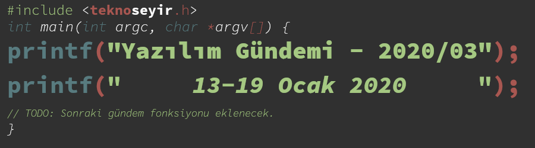
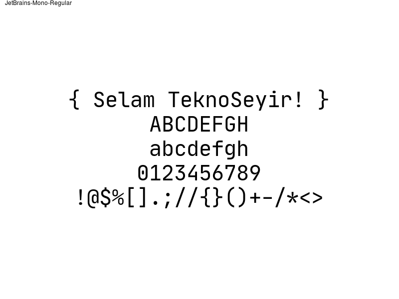
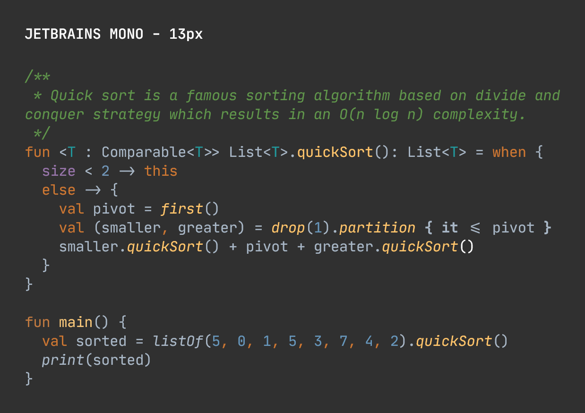
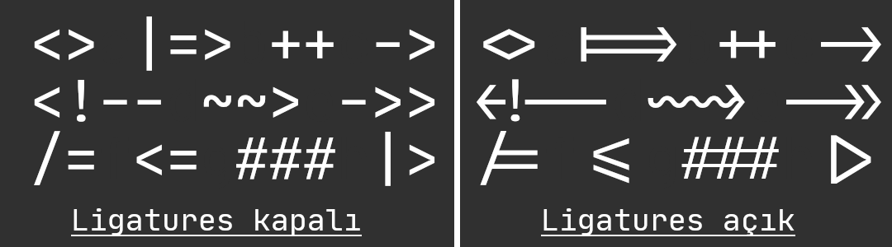
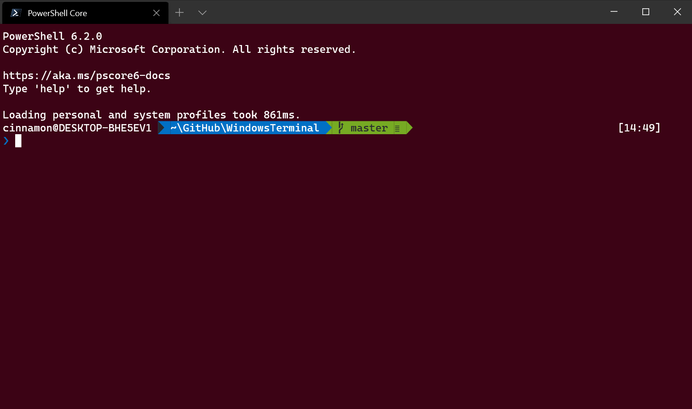
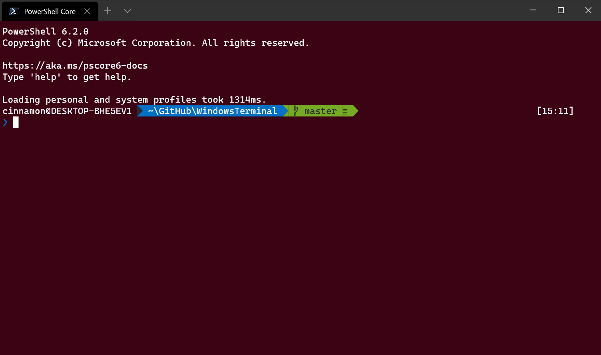

Yazılım Gündemi - 2020/03
13-19 Ocak 2020
İçindekiler
- 1. Git 2.25 sürümü duyuruldu
- 2. Chromium takımı User-Agent bilgilerini dondurmak istiyor
- 3. GitHub Android uygulamasının Beta programı duyuruldu
- 4. JetBrains yazılımcılar için yeni bir yazı tipi duyurdu: JetBrains Mono
- 5. Windows Terminal Preview v0.8 duyuruldu
- 6. IntelliJ IDEA 19 yaşında
- 7. Yaklaşan Etkinlikler
- 8. Diğer Haberler
- 9. Lisans

< Önceki Gündem | 13-19 Ocak 2020 | Sonraki Gündem >
1 Git 2.25 sürümü duyuruldu
Versiyon kontrol sistemleri krallığının tahtında oturmaya devam eden Git, bu hafta içerisinde 2.25 sürümünü çıkardı. Birkaç özelliği birlikte inceleyelim:
1.1 git sparse-checkout ile parçalı depo indirme
2019 yılı boyunca en çok konuşulan kavramlardan biri de mono-repo yapısı olmuştur sanırım. Bilmeyenler için kısaca açıklayalım: Mono-repo, projenin belirli parçalarının ayrı depolarda (repository) tutulması yerine hepsinin tek bir depoda toplanması durumudur. Atıyorum bir not tutma uygulaması yapıyorsunuz, bu uygulamanın iOS, Android, Web ve masaüstü tüm istemcilerinin kodları tek bir repository üzerinde duruyor. Çok fazla araştırmadığım ve hiç kullanmadığım için faydalarını tam bilmiyorum fakat bu yapıyı kullanan büyük şirketlerin olduğunu biliyorum.
Mono-repo yapısındaki bir depoyu indirmenin ne kadar zaman alabileceğini
tahmin ediyorsunuzdur. İşte Git'in bu sürümünde eklenen sparse-checkout
komutu da tam olarak bu tarz büyük depolarda kullanılması için tasarlanmış.
Tüm depoyu indirmek yerine sadece belirlediğiniz dosya yolundaki dosyaları
indirip, diğerlerini görmezden gelebiliyorsunuz. Henüz deneysel olan bu
özelliği destekleyen pek uzak git sunucusu yok ama yine de biz bir bakalım. Bu
özelliği kullanmak için:
$ git clone --filter=blob:none --no-checkout /sizin/deponuz/ depo $ cd depo $ git sparse-checkout init
komutlarını çalıştırmanız yeterli. Sırasıyla çalıştırdığımız komutları incelemek gerekirse:
İlk komut bildiğimiz clone komutu ama birkaç eklemesi var.
--filter=blob:none eklemesi ile clone komutuna diyoruz ki hiçbir dosyayı
indirme. Bu parametrenin kabul ettiği başka filtreleme özellikleri de mevcut.
Örneğin --filter=blob:10m parametresi ile 10MB'dan büyük dosyaları indirme
diyebiliyoruz. Diğer filtreleme özellikleri için buradaki dokümanı
inceleyebilirsiniz. Bir diğer ekleme olan --no-checkout parametresi ile de
Git'e sunucudan cevap gelince dosyaları indirme dememiz gerekiyor. Çünkü biz
sparse-checkout yapacağız. Bir sonraki komutla zaten depo klasörümüzün içine
giriyoruz ve sonrasında ise sparse-checkout özelliğini init yaparak
başlatıyoruz. Aynı zamanda sparse-checkout komutunun set, list,
enable, disable gibi alt komutları da mevcut.
$ git sparse-checkout set /dosya/yolu
gibi bir komut çalıştırarak indirmek istediğiniz dosya yollarını belirtebilirsiniz. Böylece tüm depoyu indirmek yerine sadece çalışmak istediğiniz alt projeyi indirebiliyorsunuz.
Bu yeni özellik hakkında GitHub'ın yayınlandığı detaylı bir blog yazısı mevcut. Komutun tarihçesi ve detayları için bu bağlantıya tıklayabilirsiniz.
Bu sürümde gelen diğer özellik ve değişiklikler için konu başlığına eklediğim bağlantıya tıklayabilirsiniz.
2 Chromium takımı User-Agent bilgilerini dondurmak istiyor
Google tarafından geliştirilen Chrome tarayıcının açık kaynak olan hali
Chromium tarayıcısının geliştirici takımı bu hafta yayınladıkları doküman ile
Chromium'daki User-Agent bilgilerinin deprecate etme ve dondurma niyetlerini
açıkladılar. Dokümanda yazana göre bu User-Agent bilgileri hem artık gereksiz
uzun string ifadelere dönüşmüş hem de bazı web sitelerinin bu bilgileri
kullanarak kullanıcıları tanıdıkları için bu ifadelerin artık hayatımızdan
çıkma zamanının geldiğini savunuyorlar. Bu User-Agent bilgisi genelde
kullanıcıların hangi tarayıcı ve işletim sistemini kullandıklarını tespit etmek
ve ona göre sitede uyarılar göstermek için kullanılıyor. Bu nedenden dolayı
tarayıcının içerisinden tamamen silemezler ama bu yapının yerine User Agent
Client Hints (UA-CH) isimli yeni bir yapı getirmeyi planlıyorlar. Bu yeni
yapıda artık bir web sitesi, kullanıcının tarayıcısı ve işletim sistemiyle
ilgili bilgilere hemen erişemeyecek bunun için sunucuya bir istek göndermesi
gerekecek. Üstelik bu istekte de, istediği bilgileri belirtmesi gerekecek.
Özelliğin uygulamaya geçmesi için planladıkları takvimi aynı doküman içerisinde paylaşmışlar. Ayrıca Microsoft Edge, Mozilla Firefox ve Safari gibi tarayıcılar da bu değişikliği destekliyorlarmış.
3 GitHub Android uygulamasının Beta programı duyuruldu
GitHub, Universe 2019 etkinliğinde kendi mobil uygulamalarını tanıtmıştı. Biz de daha önceki yazılım gündemi yazılarında iOS versiyonunun Beta programının duyurulduğunu söylemiştik hatta ben Beta programına katılıp uygulamayı incelemiştim. İlgili yazılım gündemi yazısı için bkz: Yazılım Gündemi - 18. Bu hafta da GitHub, Android mobil uygulamasının Beta programını başlattığını duyurdu. Bende Android telefon olmadığı için başvurup, uygulamayı inceleme fırsatım olmadı fakat sizler başvurup uygulamayı inceleyip daha sonra da deneyimlerinizi yorumlar bölümünde paylaşabilirsiniz. Android 5.1 ve üzeri sürümlerini destekliyor uygulama.
Beta programına katılmak için bu sayfayı ziyaret edebilirsiniz.
4 JetBrains yazılımcılar için yeni bir yazı tipi duyurdu: JetBrains Mono

Kotlin programlama dilini geliştiren ve IDE'leri ile meşhur olan sektörümüz için güzel araçlar üreten JetBrains firması bu sefer de açık kaynak ve ücretsiz bir yazı tipi ile karşımızda. Kendi geliştirdiği IDE'lerinin son sürümlerinin hepsinde varsayılan olarak artık bu yazı tipi gelecek. Elbette siz kendi zevkinize uygun yazı tipiyle değiştirmekte özgürsünüz. Ben de şu an bu yazıyı yazdığım Emacs üzerinde JetBrains'in bu yeni yazı tipini deneme amaçlı kullanıyorum. Hoşuma gitti ve oldukça alıştım. Önceden Input Mono isimli yazı tipini kullanıyordum fakat bir artık yeni yazı tipim bu olacak gibi gözüküyor.

Bu yazı tipi aynı zamanda "ligatures" isimli birden çok karakteri tek karakter gibi gösteren özelliği de destekliyor:

Sizce yazı tipi nasıl olmuş? Programlama yaparken kullanır mısınız? Siz programlama yaparken hangi yazı tipini kullanıyorsunuz? Yorumlar bölümünde konuşalım.
Yeni yazı tipi hakkındaki diğer detaylar için konu başlığına eklediğim bağlantılara mutlaka tıklayın. JetBrains yine her zaman olduğu gibi harika bir tanıtım sayfası hazırlamış yazı tipi için.
5 Windows Terminal Preview v0.8 duyuruldu
Microsoft'un yaklaşık bir yıldır geliştirmeye devam ettiği terminal uygulamasının bu hafta v0.9 Preview sürümü duyuruldu. Bu sürüm ile gelen bazı özellikler ise şu şekilde:
5.1 Arama
Evet, bildiğimiz düz metin arama özelliği henüz yeni eklenmiş terminal uygulamasına. Varsayılan olarak CTRL+SHIFT+F tuşları ile kullanılabilir fakat isterseniz özelleştirebiliyorsunuz tabii ki.

5.2 Sekme boyutu değiştirme
Terminal uygulamasında birden fazla sekme içerisinde farklı kabuklar (shell)
çalıştırabiliyorsunuz elbette. Bu sürüm ile birlikte ise bu sekmelerin
boyutlandırma davranışlarını değiştirme özelliği gelmiş. İki farklı değer
verebiliyorsunuz bu özelliğe, İlki: equal (eşit) adı üzerinde tüm sekmelerin
boyutlarını eşit olarak ayarlıyor ve yeni sekmeler açınca hepsini birden aynı
boyutlarda olacak şekilde sıkıştırıyor; ikincisi ise: titleLength (başlık
boyutu) bununla da sekmenin başlığında yazan yazı kadar boyutlandırma
yaptırabiliyorsunuz. Windows Terminal uygulaması varsayılan olarak
titleLength ile gelecek fakat bu davranışı değiştirmek için tabWidthMode
özelliğini özelleştirebilirsiniz.

Ayrıca çeşitli retro terminal efektleri gibi oyuncaklar da eklemişler. Diğer özellikler ve hata gidermeleri için konu başlığına eklediğim bağlantıya tıklayabilirsiniz.
6 IntelliJ IDEA 19 yaşında
JetBrains firmasının Java geliştirme için ürettiği IntelliJ IDEA IDE'si bu hafta içerisinde 19.yaşını kutladı. Uzun zamandır Java yazmıyorum, yazdığım zamanlarda da Eclipse kullanırdım ama yine de IntelliJ IDEA'nın yeni yaşını kutlamış olalım. Nice mutlu senelere :)
7 Yaklaşan Etkinlikler
| Etkinlik İsmi | Yeri | Tarihi |
|---|---|---|
| Sürdürülebilir Kod Kalitesi (Continuous Code Quality) | İstanbul | 22 Ocak 12:30 |
| İzmir Teknoloji Buluşması - Sohbet | İzmir | 22 Ocak 19:00 |
| GPU Üzerinde Derin Öğrenmesiz Veri Bilimi | İstanbul | 23 Ocak 18:30 |
| Watson ile Makine Öğrenmesi Modelleri Oluşturma | İstanbul | 23 Ocak 19:00 |
| Siber Güvenlikte Derin Öğrenme Atölyesi | İstanbul | 25 Ocak 10:00 |
| Flutter ile ilk uygulamanı yaz | İzmir | 28 Ocak 18:30 |
| rstudio::conf(2020) - Watch Party | İstanbul | 29 Ocak 19:00 |
| Scaling Architecture Decision Making | İstanul | 29 Ocak 19:00 |
| Yapay Zeka | İstanbul | 31 Ocak 18:30 |
8 Diğer Haberler
- GitHub Game Off 2019 yarışmasının kazananları açıklandı. Tüm oyunların kaynak kodları herkese açık.
- Google, kod yazmadan mobil uygulama geliştirmeye yarayan AppSheet platformunu satın aldı. Artık Google Cloud sisteminin bir parçası.
- GitLab, Cloudflare CDN hizmetine geçiyor.
- ASP.NET takımından mobil hamlesi: Experimental Mobile Blazor Bindings.
- PyTorch kütüphanesinin 1.4.0 sürümü yayınlandı.
- Vulkan 1.2 sürümünü duyuruldu.
- GNU Guile programlama dilinin 3.0.0 sürümü yayınlandı.
- Next.JS kütüphanesinin 9.2 sürümü duyuruldu.
- Go ile yazılmış HTTP yük testi aracı Cassowary, 0.4.0 sürümünü yayınladı.
- Gerçek zamanlı veritabanı çözümü SapphireDB, 1.2.0 sürümünü yayınladı.
- OpenCore 1.1.0 sürümü çıktı.
9 Lisans

Yazılım Gündemi - 2020/03 yazısı Eren Hatırnaz tarafından Creative Commons Atıf-GayriTicari-AynıLisanslaPaylaş 4.0 Uluslararası Lisansı (CC BY-NC-SA 4.0) ile lisanslanmıştır.